High-end stills & motion sets in Barcelona and across Europe. A calibrated, colour-managed Capture One station, run clean and fast — so the shoot never waits on the tech.
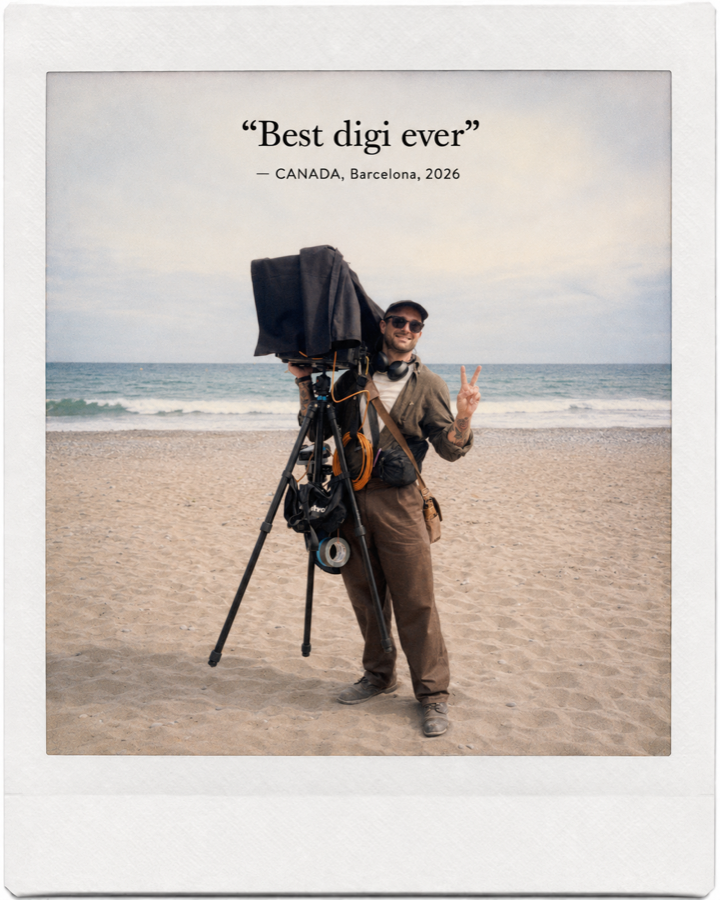
That's me — James Huertas. I run the full on-set technical chain — tethered capture, colour management, data & client review — so the photographer, director and agency can focus on the shot. Calm under pressure, fast, discreet.
Capture One tethering, live colour management, on-set grading, file integrity & backup. Your images safe and looking right, in real time.
Second pair of trusted hands on lighting — fast, anticipatory, fluent with Profoto & the gaffer's plan.
MacBook Pro M-series station, monitors, Hollyland, Tether Tools, hardened SSD workflow. Full equipment list on request.
★★★★★ “Best Digi Ever” — overheard on set, once.
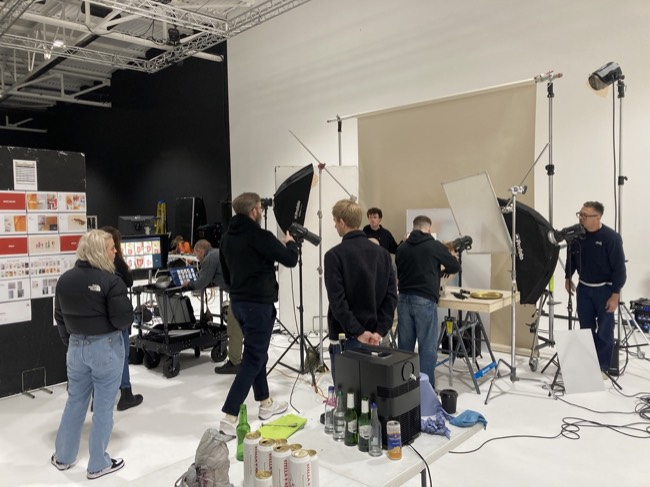
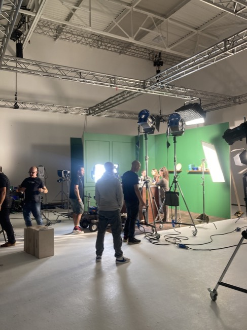
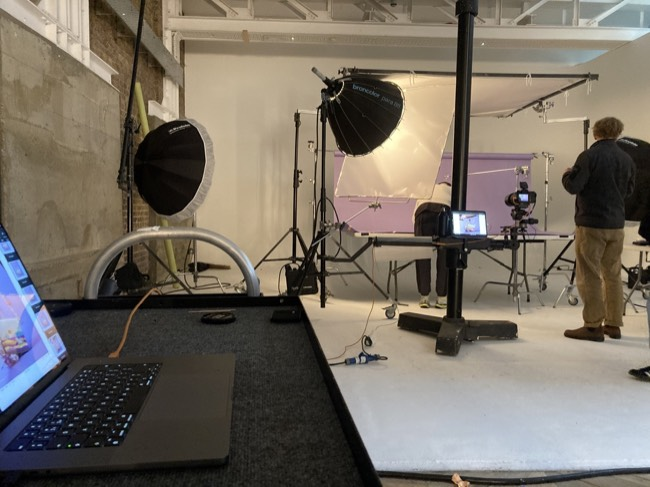
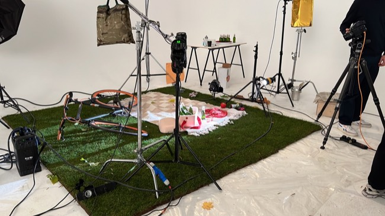
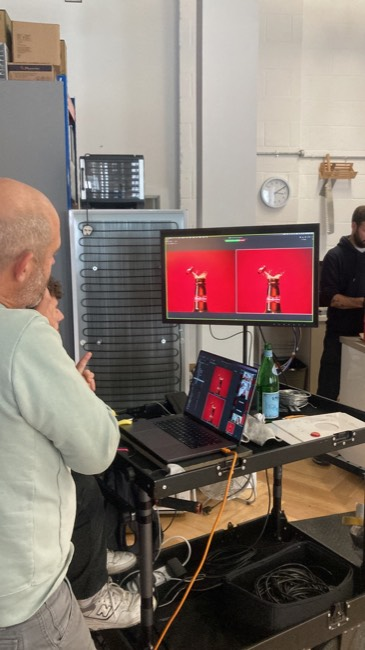
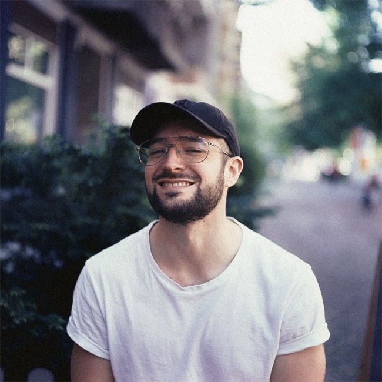
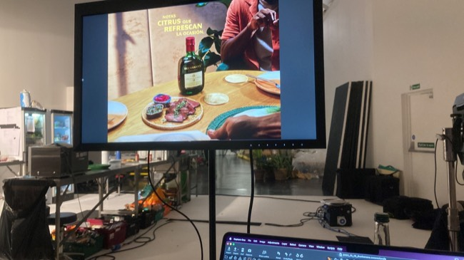
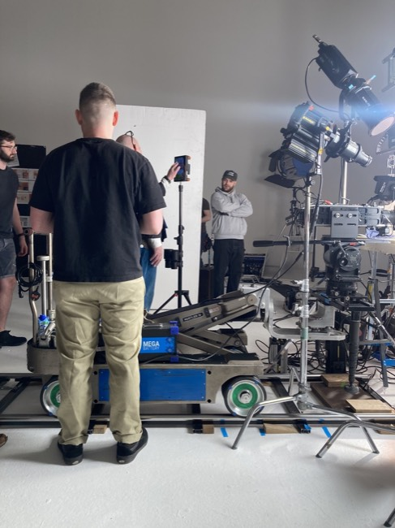
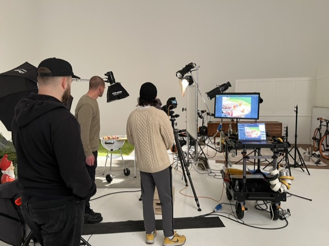
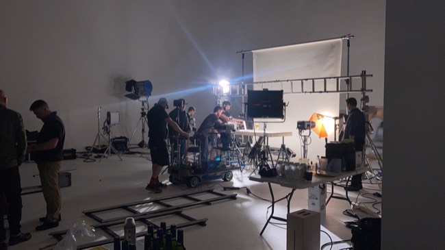
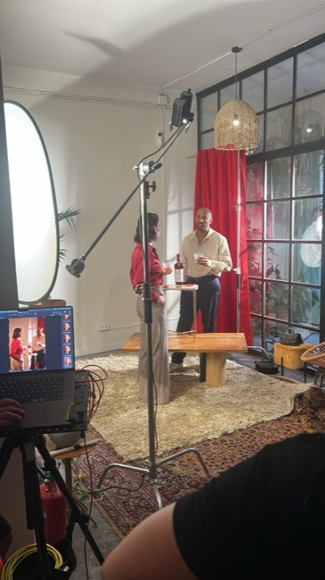
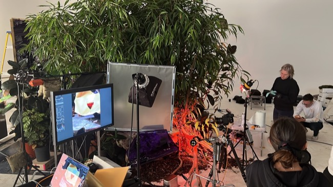
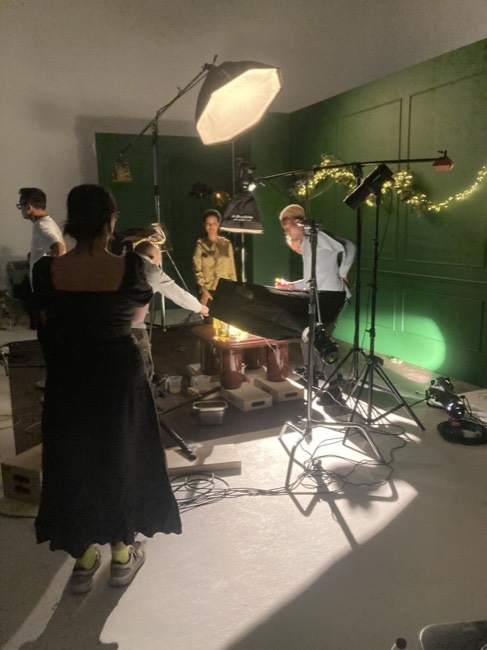
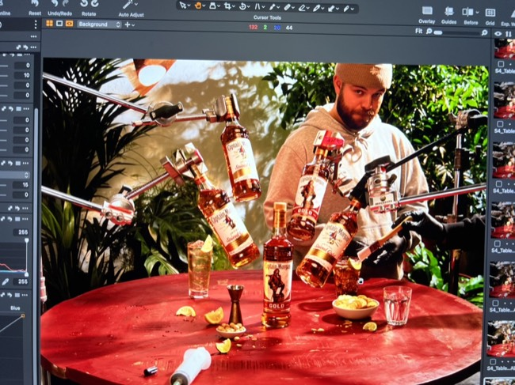